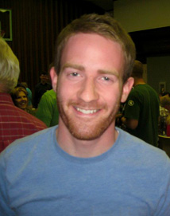

Bio
My name is Cory, and I was born and raised in Martinsburg, West Virgina. I lived there until serving an LDS mission at age 19, and afterwards move to Rexburg, Idaho to attend BYU-I. I'm currently in my last semester and will be graduating at the end of July.
I have a passion for designing and creating things, and have been doing it since I was kid. From storybooks as a child, websites and my own eBay business in middle school, computer games written in BASIC at 14 (including a side-scroller skateboarding game), and onward since then. What makes me unique is that I love both front end web and UX design, as well as backend programming and architecture. I'm inspired by well organized and fun to use web interfaces, and as a younger designer I feel I have a more current eye for them. I love the challenge of diving in to learn new things and solve new problems. I look forward to joining a team where I can help create intuitive, high performance applications. Contact me to learn more.